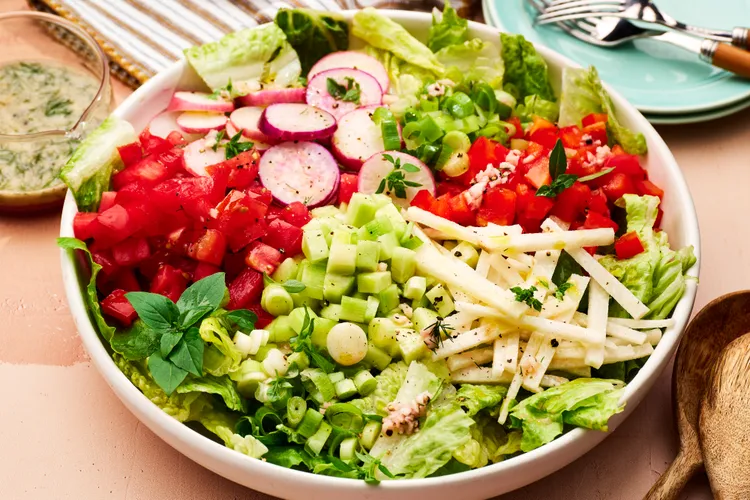

The Best Vegetable Salad

Description
A refreshing vegetable salad using all different kinds of vegetables. You can use whatever you like, but the tomatoes and cucumbers make it taste light and vibrant. Take it from Allstar Bibi, who left this review: "I really loved this salad dressing. I loved the lemony flavor and the fresh herbs. If I tweaked the dressing at all, it was to add more dill and basil, to my taste. My veggies included: baby cukes, grape tomatoes, a yellow bell pepper, scallions, and Romaine. The dressing complemented everything, but especially the tomatoes!" Between this and a strawberry and spinach salad, our tables will be green all month.
ingredients
- Romaine lettuce or mixed greens
- Cucumber, sliced
- Tomatoes (cherry, grape, or diced)
- Bell peppers (red, yellow, or green)
- Red onion, thinly sliced
- Carrots, shredded or sliced
- Radishes, sliced
- Broccoli florets (optional)
- Avocado
- Sweet corn
- Chickpeas
- Olives
- Feta cheese or mozzarella
- Fresh parsley or cilantro
- 3 tablespoons olive oil
- 1 tablespoon lemon juice or vinegar
- 1 teaspoon Dijon mustard
- 1 clove garlic, minced
- Salt and black pepper to taste
Preparation
- Wash all vegetables thoroughly.
- Chop the lettuce, cucumber, tomatoes, bell peppers, onion, carrots, radishes, and broccoli.
- Add all vegetables to a large salad bowl.
- Add optional ingredients such as avocado, sweet corn, chickpeas, olives, or cheese if desired.
- Whisk together olive oil, lemon juice or vinegar, Dijon mustard, garlic, salt, and black pepper.
- Pour the dressing over the vegetables.
- Toss everything until evenly coated.
- Serve immediately or chill before serving.